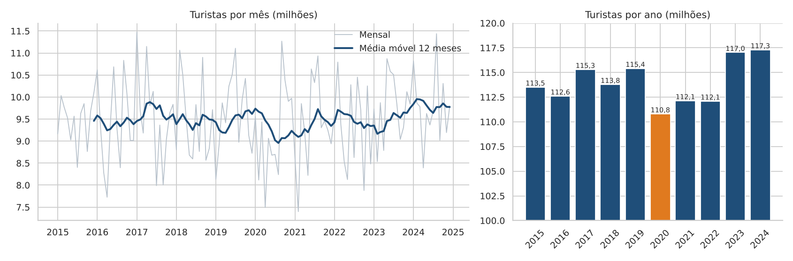
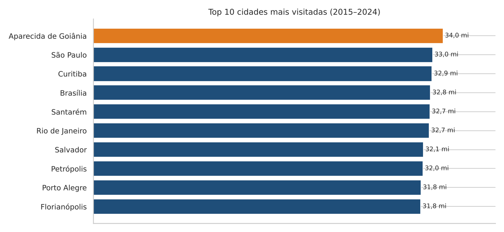
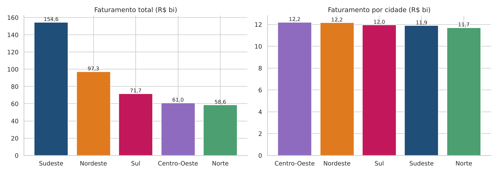
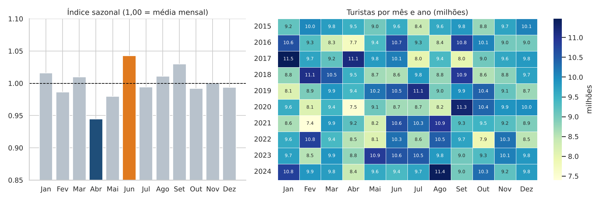
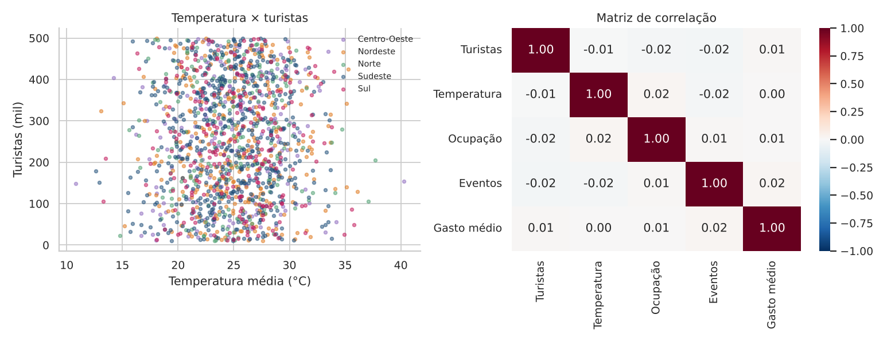

Sobre o projeto
O turismo é uma atividade econômica importante, que gera empregos, movimenta recursos e impulsiona o desenvolvimento regional. Este projeto analisa uma base simulada do turismo brasileiro entre 2015 e 2024 em duas partes: um notebook com a análise completa e um dashboard interativo em Streamlit com filtros, KPIs, gráficos, mapa, consultas SQL, interpretação textual e conclusão executiva.
Perguntas orientadoras
- Quais cidades recebem mais turistas?
- Existem períodos de alta temporada?
- Quais regiões movimentam mais recursos?
- Qual o impacto econômico do turismo?
- Existem diferenças regionais relevantes?
- Quais destinos apresentaram maior crescimento?
- Como o turismo evoluiu ao longo do tempo?
Indicadores principais (2015–2024)
Principais visualizações





Principais achados
- Turismo estável: queda em 2020 e recuperação a partir de 2023, sem grandes variações.
- Sudeste lidera o faturamento por concentrar mais cidades turísticas, não por faturar mais em cada uma.
- Ranking surpreendente: destinos tradicionais como Rio de Janeiro e Salvador não lideram.
- Clima sem influência: temperatura, eventos e ocupação não se relacionam com o número de turistas.
- Dados corrigidos: 260 registros tinham mais turistas estrangeiros que o total e foram ajustados.
Atenção: a base é simulada. Os padrões são fracos por construção e o rótulo de temporada não acompanha o movimento real de turistas; as conclusões devem ser validadas com dados reais.
Conclusão executiva
Entre 2015 e 2024, o Brasil recebeu cerca de 1,14 bilhão de turistas, que geraram R$ 443,2 bilhões em faturamento. A região Sudeste é a que mais fatura, principalmente por concentrar o maior número de cidades turísticas. O clima não influencia o fluxo de visitantes, e o ranking de cidades mais visitadas mostra que os destinos que as pessoas pensam primeiro nem sempre são os que lideram.
Tecnologias
Funcionalidades avançadas: persistência em SQLite com SQLAlchemy, dashboard multipágina, mapa interativo com Plotly e correlação estatística.
Componentes do projeto
Dashboard interativo
Filtre por ano, mês, região, estado, cidade e nível de temporada e explore KPIs, gráficos, mapa e consultas SQL.
Acessar dashboard Streamlit